library(zazou)
#> Registered S3 method overwritten by 'treeio':
#> method from
#> root.phylo ape
library(tictoc)Tree
tree <- force_ultrametric(chlamydiae$tree)
N_branch <- length(tree$edge.length)
plot_shifts(tree, NA, obs_scores = zsco_obs)
#> Warning: Removed 41 rows containing missing values (geom_label).
Shift estimation
L-BFGS-B
tic()
est_lbfgsb <- estimate_shifts(Delta0 = rep(0, N_branch), zscores = zsco_obs,
lambda = 0.1, tree = tree, alpha = 1,
method = "L-BFGS-B")
toc()
#> 0.01 sec elapsed
est_lbfgsb
#> Tree is binary with 21 leafs and 40 branches
#> Covariance matrix has been estimated from an OU with alpha = 1 and sigma = 7.198
#> ---
#> Optimisation algorithm: L-BFGS-B
#> Regularization parameter: lambda = 0.1
#> Objective value: 1.308
#> BIC: 173.255
#> ---
#> Estimated shifts: -0.077 0 0 0 -0.073 -2.21 0 0 0 0 ...
#> 17 shifts have been identified (ie 57.5 % of sparsity)
#> A parsimonious solution would involve 16 shifts
#> ---
#> Observed z-scores: -0.084 -0.084 -2.444 -2.423 -1.819 -0.041 -1.153 -1.153 -1.715 0.107 ...
#> Estimated z-scores: -0.077 -0.077 -2.359 -2.359 -1.75 -0.149 -1.114 -1.114 -1.622 -0.022 ...
#> 21 z-scores have been shifted (ie 0 % of sparsity)
plot(est_lbfgsb)
#> Warning: Removed 24 rows containing missing values (geom_label).
Shooting
set.seed(42)
tic()
est_shooting <- estimate_shifts(Delta0 = rep(0, N_branch), zscores = zsco_obs,
lambda = 0.1, tree = tree, alpha = 1,
method = "shooting")
toc()
#> 0.077 sec elapsed
est_shooting
#> Tree is binary with 21 leafs and 40 branches
#> Covariance matrix has been estimated from an OU with alpha = 1 and sigma = 7.198
#> ---
#> Optimisation algorithm: shooting
#> Regularization parameter: lambda = 0.1
#> Objective value: 1.308
#> BIC: 173.255
#> ---
#> Estimated shifts: -0.076 0 0 0 -0.075 -2.207 0 0 0 0 ...
#> 17 shifts have been identified (ie 57.5 % of sparsity)
#> A parsimonious solution would involve 16 shifts
#> ---
#> Observed z-scores: -0.084 -0.084 -2.444 -2.423 -1.819 -0.041 -1.153 -1.153 -1.715 0.107 ...
#> Estimated z-scores: -0.076 -0.076 -2.358 -2.358 -1.75 -0.151 -1.114 -1.114 -1.622 -0.022 ...
#> 21 z-scores have been shifted (ie 0 % of sparsity)
plot(est_shooting)
#> Warning: Removed 24 rows containing missing values (geom_label).Comparisons
est_lbfgsb$objective_value
#> [1] 1.308043
est_shooting$objective_value
#> [1] 1.308047
est_lbfgsb$optim_info
#> $counts
#> function gradient
#> 44 44
#>
#> $convergence
#> [1] 0
#>
#> $message
#> [1] "CONVERGENCE: REL_REDUCTION_OF_F <= FACTR*EPSMCH"
est_shooting$optim_info
#> $iterations
#> [1] 2520
#>
#> $last_progress
#> [1] 9.347276e-09library(ggplot2)
theme_set(theme_minimal())
qplot(est_lbfgsb$zscores_obs, est_lbfgsb$zscores_est) +
geom_abline() + geom_vline(xintercept = 0)
qplot(est_shooting$zscores_obs, est_shooting$zscores_est) +
geom_abline() + geom_vline(xintercept = 0)qplot(-est_shooting$zscores_est, -est_lbfgsb$zscores_est) +
geom_abline() + scale_x_log10() + scale_y_log10()